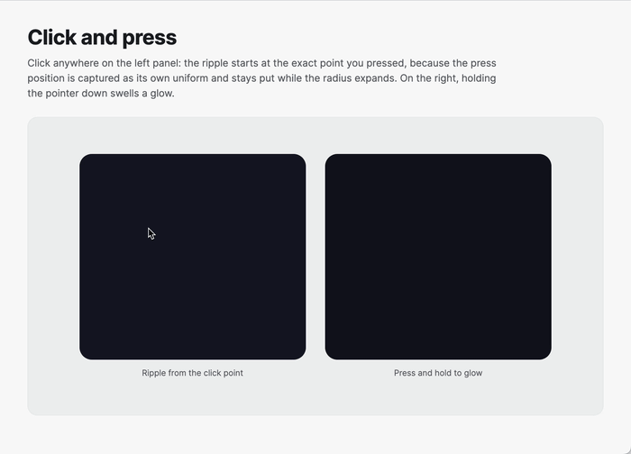
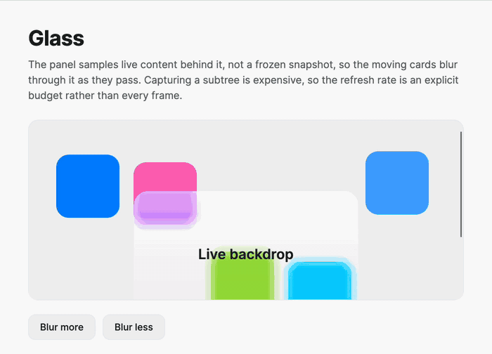
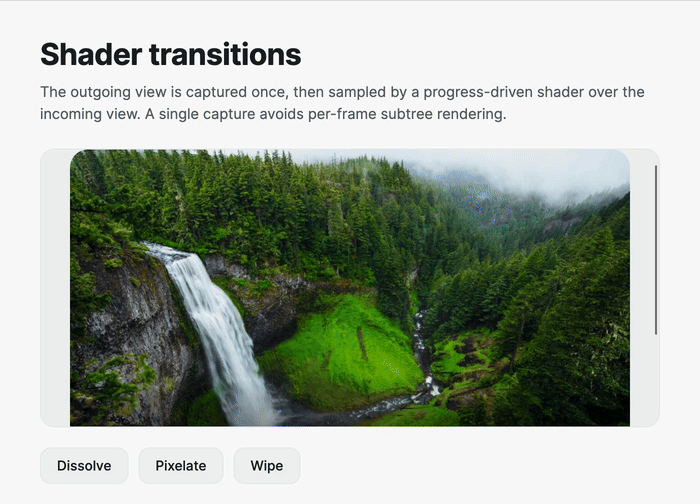

Runtime shaders
Install Nova.Avalonia.Animations.Shaders to add SkSL-backed composition controls. The package requires Avalonia's Skia rendering path.
Render a generated effect
ShaderView tracks pointer position and exposes time, resolution, click, press, and caller-controlled progress uniforms when the shader declares them.
<nova:ShaderView x:Name="Aurora"
Width="420"
Height="220"
Source="{x:Static nova:NovaShaders.AuroraRipple}" />
Drive Progress or Press with the normal motion engine:
Motion.Animate(Aurora)
.Property(ShaderView.ProgressProperty, 1d)
.With(Spring.Perceptual(0.8, 0.18))
.Start();
Set IsTimeAnimated to False when a shader declaring iTime should redraw only after state changes.

Apply a backdrop effect
ShaderBackdrop captures a source visual and samples the relevant region behind the control.
<Grid x:Name="Scene">
<!-- Page content -->
<nova:ShaderBackdrop Width="320"
Height="160"
SourceVisual="{Binding #Scene}"
Source="{x:Static nova:NovaShaders.Glass}"
RefreshRate="20"
CaptureMargin="32" />
</Grid>
Higher RefreshRate follows live content more closely and costs proportionally more. Set it to zero and call Capture() when on-demand snapshots are sufficient. CaptureMargin must cover the custom shader's maximum sampling radius.

Transition captured content
ShaderTransition captures its child, then exposes the snapshot to an iContent shader.
<nova:ShaderTransition x:Name="Transition"
Source="{x:Static nova:NovaShaders.Dissolve}">
<ContentControl Content="{Binding CurrentCard}" />
</nova:ShaderTransition>
Transition.Progress = 0;
if (Transition.Capture())
{
await Motion.Animate(Transition)
.Property(ShaderTransition.ProgressProperty, 1d)
.With(Tween.EaseInOut(0.7))
.Start();
Transition.Release();
}

Built-in shaders
NovaShaders includes generated effects (AuroraRipple, Shimmer, Spotlight, Foil, ClickRipple, PressGlow, MeshGradient), captured transitions (Dissolve, Pixelate, Wipe), and backdrop effects (Glass, BackdropBlur).
Subscribe to ShaderDiagnostics.Diagnostic to route recoverable compile and configuration failures to application logging.